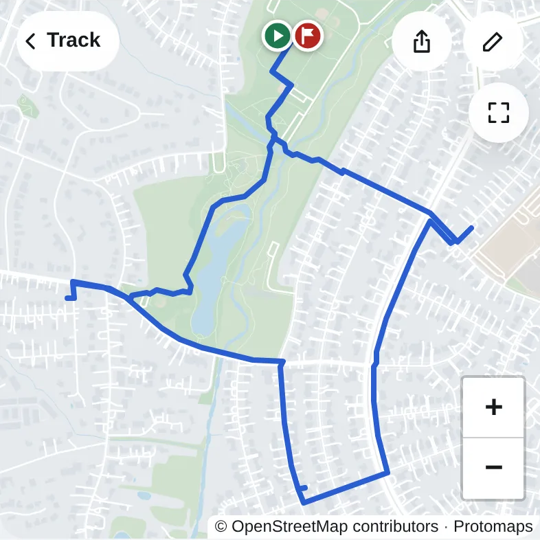
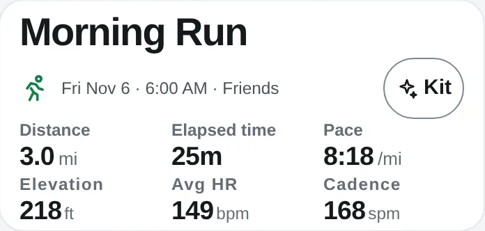
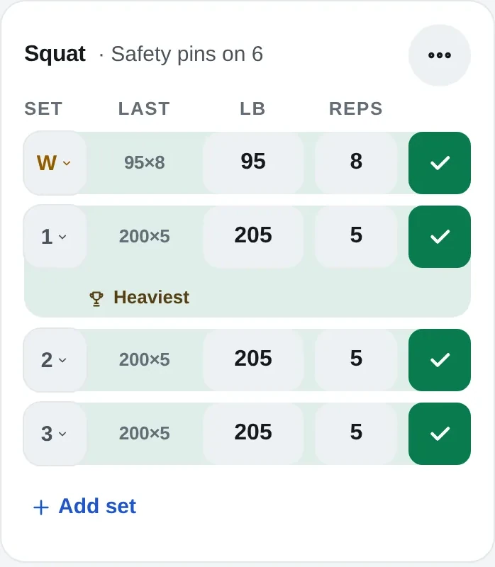
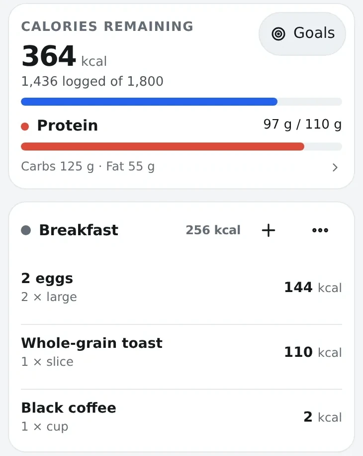
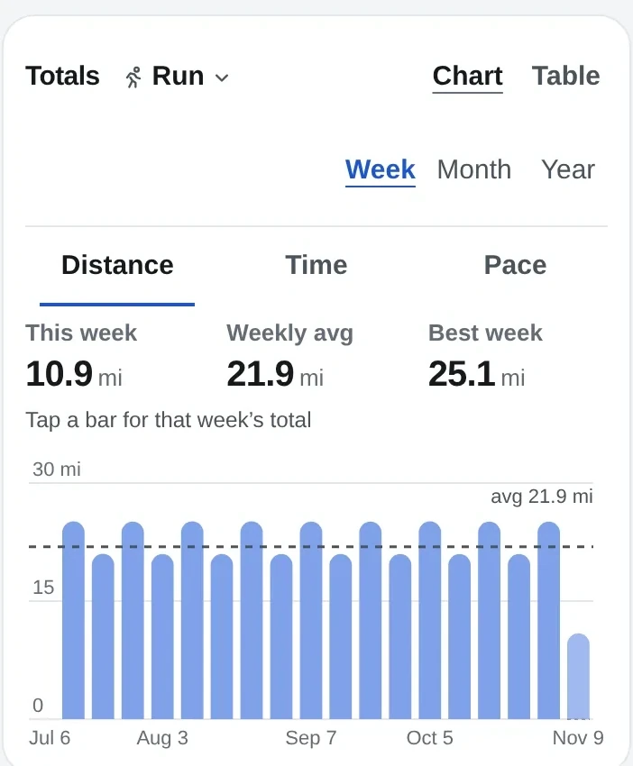
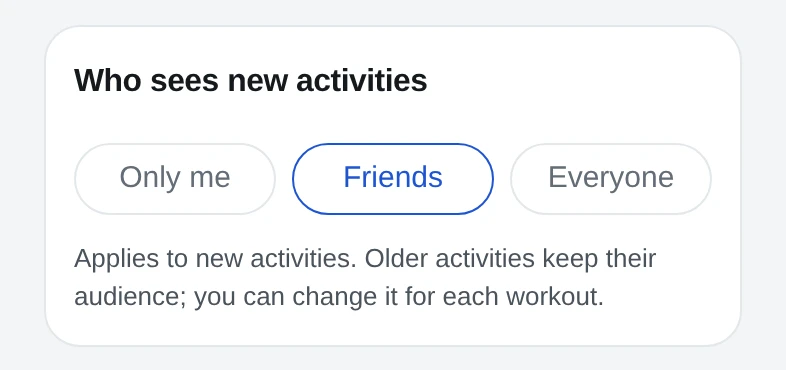
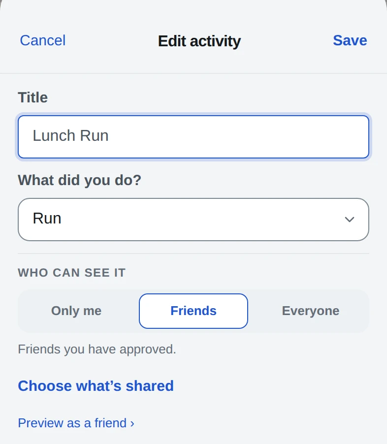

Real app screens, demo data.





Set a default for new workouts. Change any single workout when you edit it.
Explore Friends →New workouts · Settings

One workout · Edit

| What you want to do | Kinetta tools |
|---|---|
| Keep your workout history | Runs, rides, walks, swims and lifting from the Health app, activity files or a Strava export |
| Review a workout | Maps, pace, heart rate, splits and elevation, when the recording includes them |
| Compare your training | Matched routes, records, race predictions, weekly totals and a personal heatmap |
| Plan runs and log lifting | 5K-to-marathon plans; sets, reps and weight |
| Track food and portions | Food search, barcodes, optional photo estimates, saved recipes, calories and macros |
| See food and activity together | Daily nutrition estimates that include recorded workouts, and a weight trend |
| Share with people you know | Approved friends, a feed, per-workout audience, reactions and comments |
| Use optional AI help | Food estimates and training or nutrition reviews, when enabled for your account |
Pricing for the hosted service hasn’t been announced.